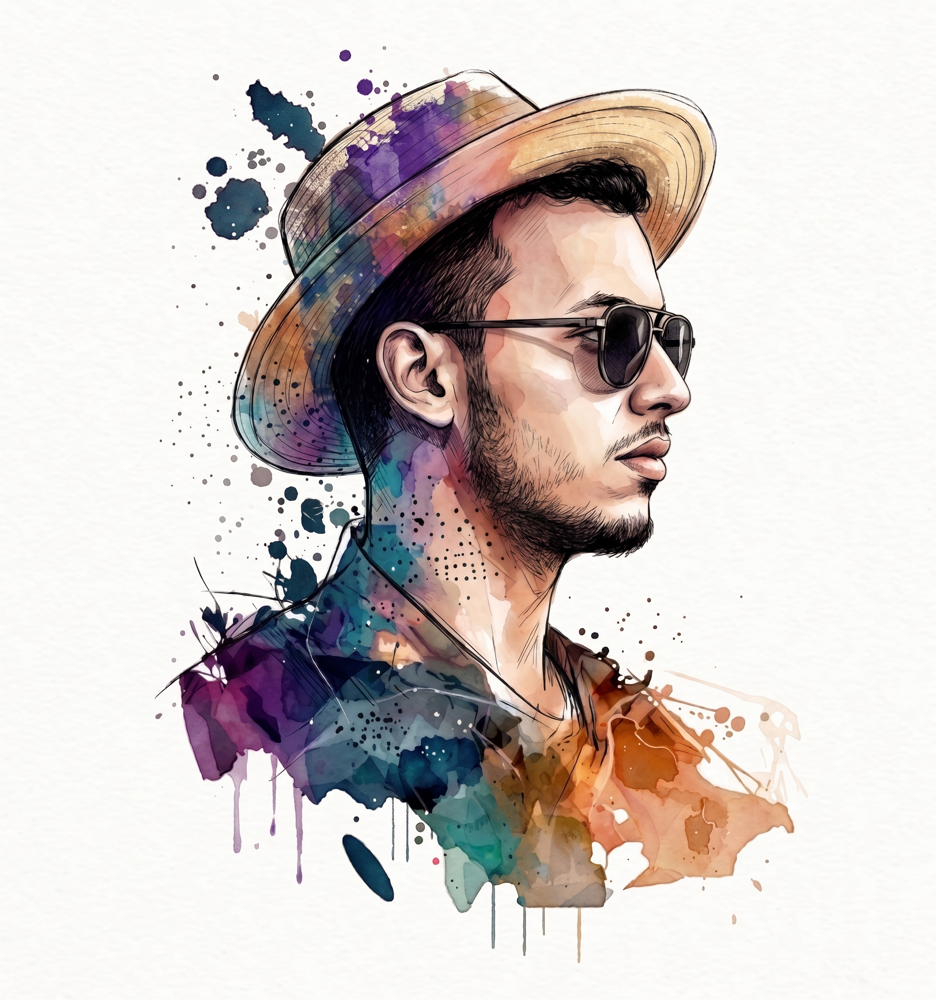

Mohammed VI Polytechnic University - International Water Research Institute (UM6P-IWRI), Morocco
Université du Québec à Trois-Rivières - Centre de recherche sur les interactions bassins versants - écosystèmes aquatiques (RIVE), Canada
Open to collaboration · drought · water · EO ·
Let's talk